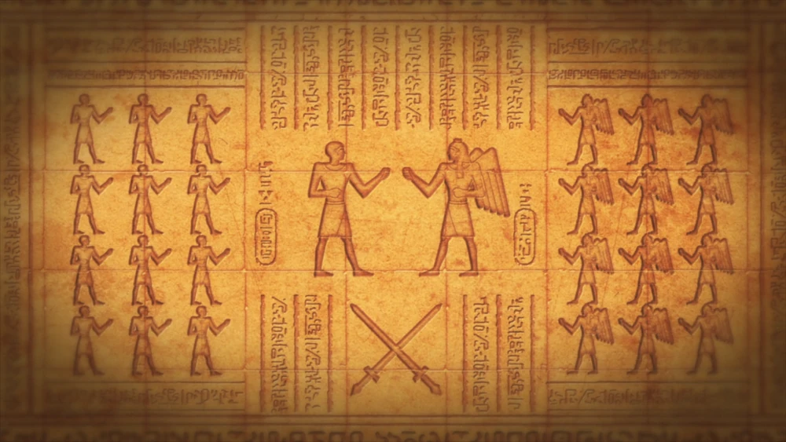

Record of Ragnarok (終末のワルキューレ Shūmatsu no Warukyūre?, lit. "Fim das Valquírias") é uma série de mangá japonesa
escrita por Shinya Umemura e Takumi Fukui e ilustrada por Ajichika. Tudo começou na revista de mangá seinen Monthly Comic Zenon
da Coamix (anteriormente também publicada pela Tokuma Shoten) em novembro de 2017. Foi licenciado na América do Norte pela Viz Media
em junho de 2021. O mangá foi adaptado como original net animation (ONA) pela Graphinica e estreou na Netflix em junho 2021.
Uma segunda temporada da Graphinica e Yumeta Company está marcada para estrear em janeiro de 2023

A cada 1000 anos, os deuses de cada panteão reúnem-se e realizam uma conferência para decidir o destino da humanidade, convocando uma votação para determinar se a raça humana deve ou não continuar a viver ou ser extinta. Com a conclusão da mais recente dessas conferências, os deuses decidiram por unanimidade pôr fim à humanidade. No entanto, no último segundo, a mais velha das Valquírias, acompanhada pela mais nova, interveio e fez a ousada proposta de deixar a humanidade ter uma palavra a dizer sobre o seu destino, deixando-os ir contra os deuses numa série de confrontos um-a-um. luta para ver se são dignos de continuar a existir. Com medo de abandonar o orgulho, os deuses aceitam a proposta. Treze deuses lutarão contra treze campeões humanos. O primeiro lado a alcançar sete vitórias decidirá o destino da humanidade.